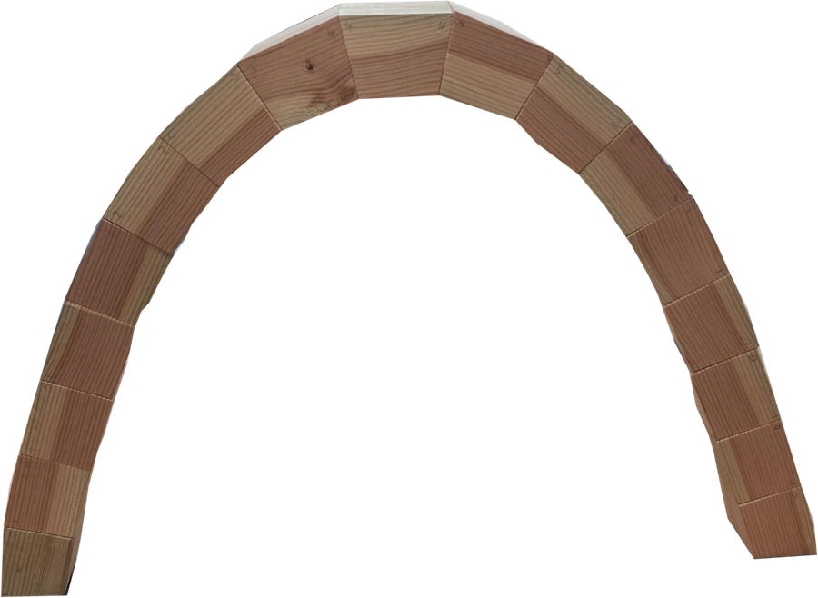
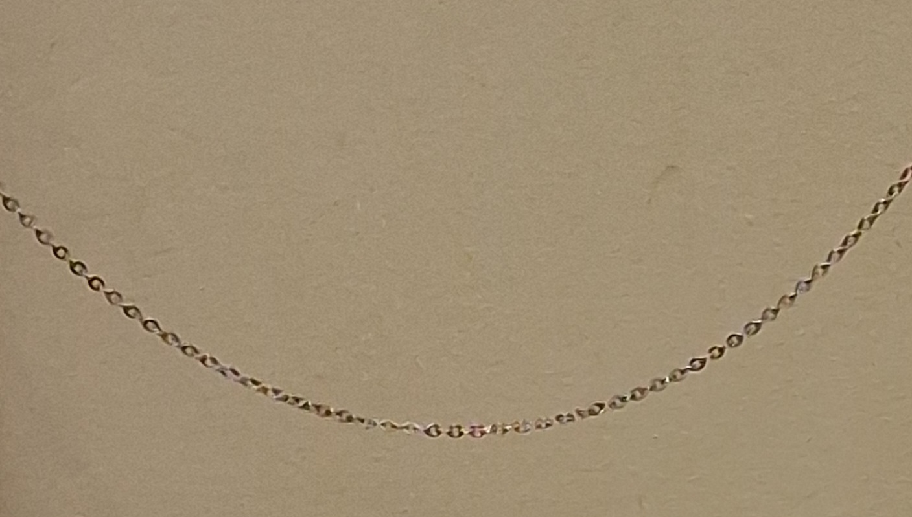
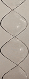

Arches
What is the optimal shape for a self-supporting arch?
Seemingly different problems often turn out to be linked by a common mathematical explanation.

What is the optimal shape for a self-supporting arch?

What is the curve traced out by a uniform chain suspended from its end points?

What is the shape of a soap film spanning two parallel circles?

What is the shape of a soap film spanned by a double helix?